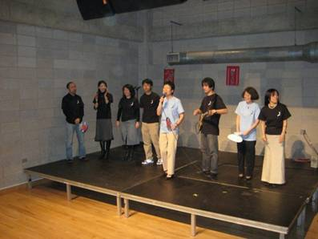
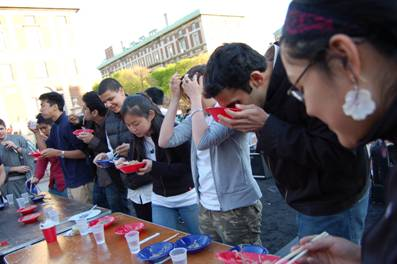
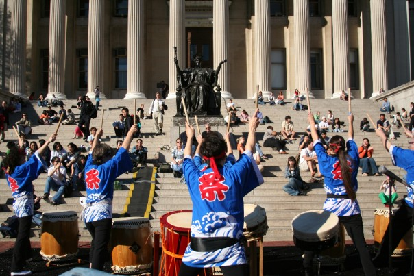
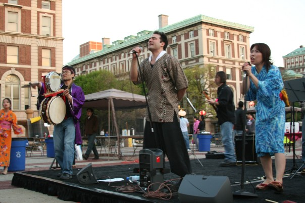

In addition to crazy festival booths and authentic Japanese restaurants, CJS MATSURI 2008 also prides itself in its spectacular line of stage performances throughout the event! From traditional performing arts to just crazy fun game show-style activites, you won't want to miss a thing!
Gagaku is a Japanese musical tradition lasting over a thousand years. It's really hard to explain what they sound like with writing, so it's best if you just came out and listened for yourself.
Those who have taken a Japanese language class at Columbia University might recognize these performers. That's because these performers aren't really performers at all! They are the Japanese program at Columbia University's finest teachers! They are going to embarass themselves (or perhaps not!) by singing at CJS MATSURI 2008. In addition, they're providing us with a little surprise that even CJS doesn't know about!
Mina Kitamura was born in Osaka, Japan. She received her Bachelor's degree from Doshisha Women's College in Kyoto where she studied with Nobutaka Shimizu. She is the winner of the Excellence Award in the Great Wall Cup International Contest and placed second in the Julius Baker YAMAHA Award. In 2004, she was named Rookie of the Year by the Japan Flute Association.
In the summer of 2007, she participated in the Aspen Music Festival. She performed Otaka's flute concerto with the University Orchestra as a result of winning the concerto competition. She also had a recital at Carnegie Hall. She is a member of Bateira Trio whose bassist is a member of the New York Philharmonic and whose violist is a member of the New York City Ballet.
Check out her official homepage here.
Want to have an enjoyable afternoon at a festival AND pick up a date at the same time? Enlist to be a contestant on our Japanese style gameshow and have a chance to win a date with our mystery bachelor or mystery bachelorette! Just watching is fine too, of course!
2KILOGRAMS! Imagine watching a stage filled with contestants stuffing 2kg of curry into their stomachs. Rice, curry roo, fried cutlet and shrimp fry toppings, and some cabbage on the side. Thats' what this is all about!
TAIKO is Japanese drums. Drums have a long and significant history in Japan. Thanks to the Taiko Society at CU's Teacher's College, you can see first hand the exhiliration of Japanese taiko. Not for the weak of heart...
CJS is happy to invite Happy Fun Smile again this year after their awesome performance in 2005. Happy Fun Smile is an Okinawa-style band based here in New York. We always love watching them perform.
